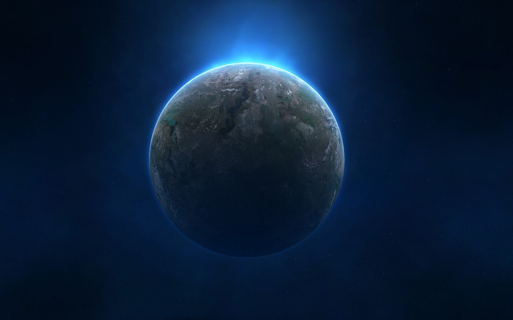

Neptune
Neptunewas first seen in 1846 from the observatory in Berlin. But the existence of Neptune had actually been “discovered” a year earlier, in 1845. Two astronomers (scientists who study the stars and planets), J.C.Adams in England and Urbain Le Verrier in France, had been puzzled by the shape of Uranus’ orbit. They worked out, using MATHEMATICS, that some large, more distant, body must be pulling Uranus towards it at certain points in the orbit.The Berlin observatory, following Le Verrier’s calculations giving the possible position of this object, searched for Neptune and found the planet. They named it Neptune after the Roman God of the Sea.
Neptune moves in an orbit round the Sun at the centre of the system. It takes Neptune 165 of our Earth years to orbit the Sun. The Earth orbits the Sun in 365 days, one year. In 2011 Neptune completed the first orbit of the Sun since its discovery 165 years before in 1846.
In July 2018, the European Space Agency's Very Large Telescope used a new adaptive optics technique to produce a clear and sharp image of Neptune.(Search for the pic if you want)
